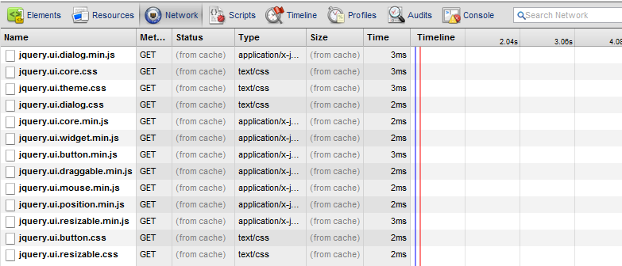

Marix.js is an extensible JavaScript library that can load client side modules on demand from server. It helps you to build Single Page Application with faster loading speed, less memory consumption, and better module reusability.
jQuery 1.5+. It can dynamically load jQuery from CDN, if jQuery is not loaded.
Today, we are trying to build large scale Single Page Application with experience of native application. This kind of application usually depends lots of modules. These modules can be are system modules like jQuery, or MV-ish library/Framework, or they can be application modules such customs widget, template, css module, localization resource, lookup data. As the application grows, the number of moduels increase. These becomes quite a challenge us. In the following, I try to use Problem/Solution style to explain how to use matrix.js
I have a traditional web page, which consist of lots of widget and references lots JavaScript library, I want to speed up the loading of first page.
I can synchronously load the minimun set of modules to render the initial view that use can see, and asynchronously load other modules in the background. Here is the source
<!-- in the web page --> <input type="button" id="btnOk" value="Ok" disabled /> <script type="text/javascript"> matrix.baseUrl = "js/" matrix( "defer-module.js" ); </script>
//in the defer-module.js
$("#btnOk").attr("disabled", false).click(function () {
alert("hi");
});
My module dependes on other modules, such as localization string, css. I want to load them together.
In this solution, we put some annotation to the header of the module files which record the depedencies. Adding annotatio to the source file has least impact on the source files. Here is the source.
/*
<@depends>
localization.js, module1.css
*/
$( "#btnOk" ).attr( "disabled", false ).click( function() {
$( "<h1 class='mymodule'>" + message + "</h1>" ).appendTo( "body" );
} );
In previous solution, if the source file is located in a cross-site domain, current browser does not allow us to inspect the content of the source file. So that solution will not work. In order to solve the problem, we can use matrix.define to rewrite the code in previous solution. Here is the source.
//in source file module1.js
matrix.define(
"module1.js", //current module id
"localization.js, module1.css", //depenencies
function() {
$( "#btnOk" ).attr( "disabled", false ).click( function() {
$( "<h1 class='mymodule'>" + message + "</h1>" ).appendTo( "body" );
} );
} );
You don't want modify the original module source file. You can specify it in a profile.js for matrix.js
I have lots of modules, each modules is in its own file, this create lots of HTTP calls.
We can use build tools to combine and js files, however, the original source code need to be defined using matrix.define method. Here is the source.
//in module1.js
matrix.define(
"module1.js", //current module id
"localization.js, module1.css", //depenencies
function() {
$( "#btnOk" ).attr( "disabled", false ).click( function() {
$( "<h1 class='mymodule'>" + message + "</h1>" ).appendTo( "body" );
} );
} );
matrix.define( "localization.js", function() {
window.message = "hello world!";
} );
In this solution, we don't need combine the files. We still use the loose source file. For the first time, there are lots http round trips, this is acceptable the web page is is single page application, take this installation process. If we use proper http cache control header, the second visit of the web page, all the source file will be served locally. There will be zero http call for these modules. Make sure the Cache-Control is infinitive long, so that it will never expire virtually, like the following.
Cache-Control: max-age=999999999 Last-Modified: Sun, 03 Apr 2011 14:34:43 GMT
So even you have lots of loose file, the second request will be still very fast, like the following image shows
In the previous solution, we set the cache-control header to a crazy large value, so that it will never expired, but what if we update our module files andn now the client will not be able to pick it up?
The solution is to change the url by adding a small hash value, so that browser think that it is a new resource.
//modules/module1.css?v=2
matrix.hash("2");
//
//this will generate new hash, and basically disable cache,
//it is good for development.
//module1.css?v=1348516706585
matrix.hash(true);
I have use built-tool to combine some module into a file and preloaded, however some modules is loaded on demand, will there be conflict?
As long as you use matrix.define method to define your module, it doesn't matter whether you load them statically using script tag or load them on demand using matrix.js. In the following sample, name
<!--statically load bye.js--> <script src="modules/bye.js"></script> <script type="text/javascript"> matrix.baseUrl = "modules/" matrix( "module1.js" ); </script>
//in module1.js
matrix.define(
"module1.js", //current module id
"localization.js, module1.css, bye.js", //depenencies
function() {
$( "#btnOk" ).attr( "disabled", false ).click( function() {
$( "<h1 class='mymodule'>" + message + bye + "</h1>" ).appendTo( "body" );
} );
} );
matrix.define( "localization.js", function() {
window.message = "hello world!";
} );
//in bye.js
matrix.define("bye.js", function () {
window.bye = "bye!";
});